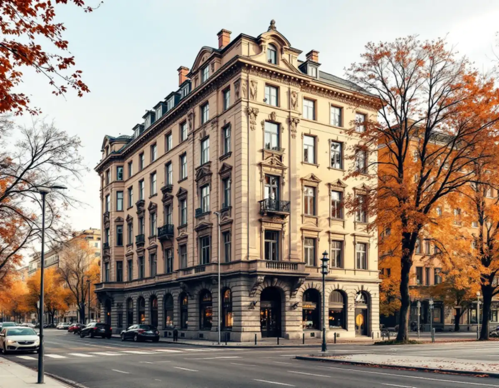
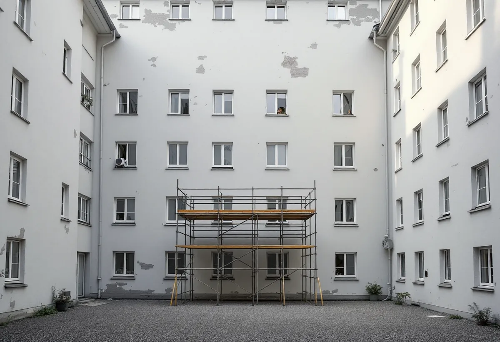
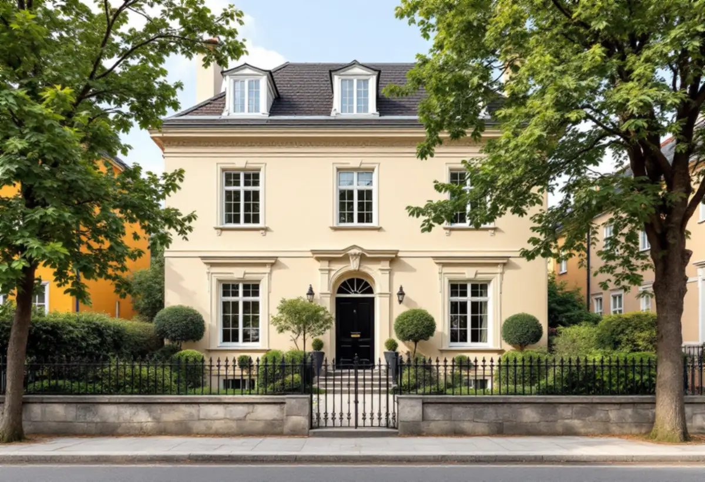

Två fasader, två genomgångar
Vi går igenom gatufasaden och gårdsfasaden var för sig och noterar skador på puts, sten och plåt.
Ett stenhus på Östermalm har oftast två ansikten: en påkostad fasad mot gatan och en enklare mot gården. Reglerna för dem skiljer sig åt, och det gör arbetet också. Geal Entreprenad AB renoverar fasader på Östermalm åt bostadsrättsföreningar och fastighetsägare och planerar gatusidan och gårdssidan var för sig.

Översiktsplanens avsnitt om den klassiska stenstaden, bebyggelsen från 1870–1930 som bland annat breder ut sig över Östermalm, räknar upp vad som bär stadsdelens karaktär. Där finns gatufasadernas tydliga uppdelning i sockelvåning och huvudfasad, oftast med markerad takfot och ibland med en attikavåning, och där finns de enklare gårdsfasaderna. Hyreshusen är normalt fem våningar höga vid 18 meter breda gator och har tidstypiska, dekorerade fasader i puts eller natursten. Längs Strandvägen, Valhallavägen, Narvavägen och Karlavägen beskriver planen esplanader inramade av monumentala bostadspalats från 1800-talets sista decennier.
Planen påpekar också att många hus i stenstaden har en relativt låg klassificering, gul klass, därför att de har förändrats sedan de byggdes. Vid prövning ska ändå betydelsen för stadsmiljön vara avgörande och inte det enskilda husets klassificering. Att ett hus har gul klass betyder alltså inte att fasaden saknar betydelse när en ändring prövas.

För ett flerbostadshus skriver Stockholms stad att det krävs bygglov för en fasadändring på fasad eller tak som vetter mot allmän plats, alltså i regel gatan. En ändring som inte vetter mot allmän plats kräver inte lov, om vissa förutsättningar är uppfyllda – den ska till exempel stämma med detaljplanen eller vara en liten avvikelse som inte motverkar planens syfte, och utökad lovplikt får inte gälla. Som fasadändring räknar staden bland annat byte av kulör eller material på fasad eller tak och tilläggsisolering.
Lovfri eller inte, så gäller samma grundkrav på båda sidor om huset. Plan- och bygglagen säger att en ändring av en byggnad ska utföras varsamt så att byggnadens karaktärsdrag och dess tekniska, historiska, kulturhistoriska, miljömässiga och konstnärliga värden tas till vara, och att en särskilt värdefull byggnad inte får förvanskas. Gårdsfasaden kan vara enklare, men den hör till samma hus. Söker föreningen lov ska ansökan enligt staden ha en fasadritning i skala 1:100 och en material- och kulörbeskrivning där kulörerna anges i NCS-systemet. Vid mycket enkla ändringar kan ett fotomontage ersätta fasadritningen. Arbetet får inte börja förrän startbesked har getts, och när föreningen har visat att kraven är uppfyllda kommer ett slutbesked.
Norr om Humlegården ligger Villastaden, som enligt översiktsplanen byggdes efter 1876 efter engelskt stadsplanemönster. De tidiga husen blev stora fristående villor indragna från gatan med planterade förgårdar, och när planen fullföljdes växte skalan till högre fristående flerbostadshus. Bland karaktärsdragen nämner planen den måttfullt klassicerande putsarkitekturen och förträdgårdar inhägnade med staket eller murar mot gatan. Här kan fasaden mot gatan alltså stå en bit in på tomten, och ställningen kan planeras över förgården i stället för på trottoaren.
Annars är det lägenheterna som dominerar. Stadens områdesfakta för stadsdelen Hedvig Eleonora 2025 räknar 7 344 bostäder, varav 5 164 bostadsrätter, och bara 11 bostäder i småhus, av vilka två är äganderätter. Där är det alltså nästan undantagslöst en förening eller fastighetsägare som beställer fasadarbetet. Om målning inne i lägenheten, se målare på Östermalm, och om fasadarbete i stort fasadrenovering.

Vi går igenom gatufasaden och gårdsfasaden var för sig och noterar skador på puts, sten och plåt.
Vi kontrollerar Stadsmuseets karta och vad detaljplanen säger om just den här fastigheten.
Gatusida och gårdssida redovisas separat, så att styrelsen kan ta dem i den ordning den vill.
Behövs lov tar vi fram dagens material och kulörer som grund för beskrivningen i NCS.
Puts lagas med bruk som passar det befintliga, och dekoren kompletteras efter befintlig profil.
Fasaden avfärgas, plåt på lister och takfot ses över och ställningen monteras ner.
En fasadrenovering i ett flerbostadshus beställs av föreningen eller fastighetsägaren. Skatteverket räknar fasader till de gemensamma ytorna och ger därför inget rotavdrag till bostadsrättshavarna, och inte heller för tilläggsisolering eller för ställning på utsidan av bostaden.
Äger du själv ett småhus räknas att byta, mura, reparera och måla fasader som rotarbete. Avdraget är högst 30 procent av arbetskostnaden, som mest 50 000 kr per person och år och 75 000 kr ihop med rutavdrag, och det gäller arbetad tid på plats, inte material eller resor. Vi drar det direkt på fakturan.
Fasadens höjd och yta, mängden dekor som ska lagas, om stenpartier behöver åtgärdas, hur mycket plåt som ska bytas och om gatusidan kräver lov styr kostnaden mest. Efter ett gratis platsbesök får styrelsen ett skriftligt kostnadsförslag där gatufasad och gårdsfasad står var för sig.
Puts, panel och tilläggsisolering.
Fasadrenovering i Stockholm →Kulturvärden, förvanskningsförbud och klassning.
Badrumsrenovering på Östermalm →Stenstaden, Lärkstaden och villorna.
Fönsterbyte på Östermalm →Fönster och glas i Gärdets 1930-talshus.
Fönsterrenovering på Östermalm →Mönsterparkett, lack och olja.
Golvläggare på Östermalm →Slipa om eller underhålla lackade golv.
Golvslipning på Östermalm →Limfärg i taken, dekor och lov.
Målare på Östermalm →